操作系统原理 · 第 9 章 文件系统
9.8 UNIX文件系统的主要结构及实现
前面几节讲的都是原理：逻辑结构、物理结构、存储空间管理、目录与共享。这一节看一个真实的文件系统——UNIX——怎么把这些原理组合成一套能跑的实现。主线依次是：UNIX 用什么概括文件（索引结点）、索引结构如何支撑从小型到巨型的文件、目录项与树型目录如何配合随机存取、多个路径名如何共享一个文件（勾链），以及打开文件机构与文件卷、空闲块管理如何落地。
1. 实现一个文件系统要考虑什么
从零实现一个文件系统，要回答的问题并不多，但每一件都牵连全局：① 确定文件的属性、逻辑结构、物理结构；② 空闲物理空间（物理块）的管理；③ 目录结构；④ 文件操作。前面几节正是围绕这四件事展开的。
UNIX 文件系统的回答很有代表性，它的基本特点是：
- 文件是无结构的字符流式文件，采用索引结构；
- 目录采用树型层次结构；
- 文件系统是可安装、可拆卸的（一个文件卷可以挂上、也可以卸下）；
- 把外部设备和目录统一作为文件一样对待。
就文件的类型而言，UNIX 把系统中的文件分成三类：
| 类型 | 说明 |
|---|---|
| ① 普通文件 | 用户程序、数据文件 |
| ② 目录文件 | 用于组织和形成树型目录结构中的一个单位，目录文件的内容由若干目录项组成 |
| ③ 特别文件 | 与硬件设备有关的文件，包括块设备文件和字符设备文件。与计算机连接的每一种输入输出设备都有一个特别文件，它是操作系统读写输入输出设备的通道，是用户与硬件设备联系的桥梁 |
2. 索引结点（i 节点）
目录项里要记的东西很多（逻辑结构、物理结构、控制信息、管理信息、类型……），而目录本身又需要被反复查找。UNIX 的做法是把这两件事分开：把文件目录项中除了名字以外的信息全部存放到一个磁盘数据块上，这种数据块就是文件索引结点（index node，简称 i 节点），又称磁盘索引节点；目录项中只保留文件的名字和对应 i 节点的编号。这样一来，查找目录时搬运的数据量大大减少，而文件的全部属性集中在一处管理。
磁盘索引节点的结构包含以下字段：
| 字段 | 含义 |
|---|---|
| 文件所有者标识 i_uid，i_gid | 定义对一个文件具有存取权的用户集合，分为文件所有者与用户组所有者 |
| 文件类型 i_type | 分为正规文件、目录文件、字符特殊文件或块特殊文件 |
| 文件存取许可权 i_mode | 按文件所有者、文件的用户组及其他用户三个类别对文件施行保护，每类都具有读、写、执行该文件的存取权，并且能分别设置 |
| 联接计数 i_ilink | 表示在文件目录结构中有多少个文件名指向该文件：增加一个名字时值加 1，减少一个名字时值减 1；减为 0 时该文件才真正被删除 |
| 文件存取时间 i_time | 记录文件的存取时间 |
| 文件长度 i_size | 文件的大小 |
| 地址索引表 i_addr[13] | 文件数据的磁盘地址明细表：UNIX 第七版本用 i_addr[8] 描述，UNIX System V 用 i_addr[13] 描述 |
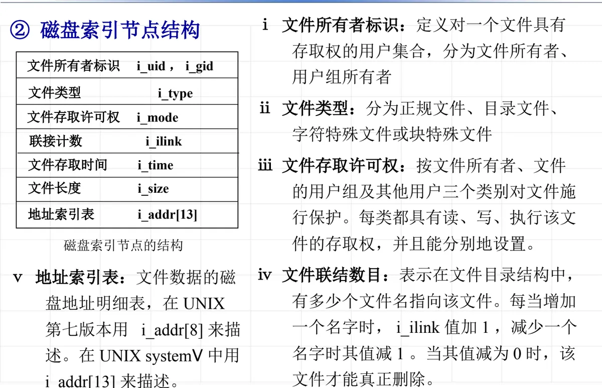
3. UNIX 的文件索引结构
UNIX 系统采用文件索引结构，文件所在的磁盘物理块号可以不连续。索引表就是 i 节点中的地址索引表 i_addr[]，它如何组织，直接决定了文件能有多大。UNIX 按文件规模分成小型文件、大型文件、巨型文件三种情况（以下以 UNIX 第七版本为例，物理块大小为 512 B）。
（1）小型文件
构造小型文件时，i 节点中具有 8 个数据项的数组 i_addr[] 直接作为直接索引表，每个表项登记一个数据块的块号。因此小型文件的大小上限是：
8 × 512 B = 4096 B = 4 KB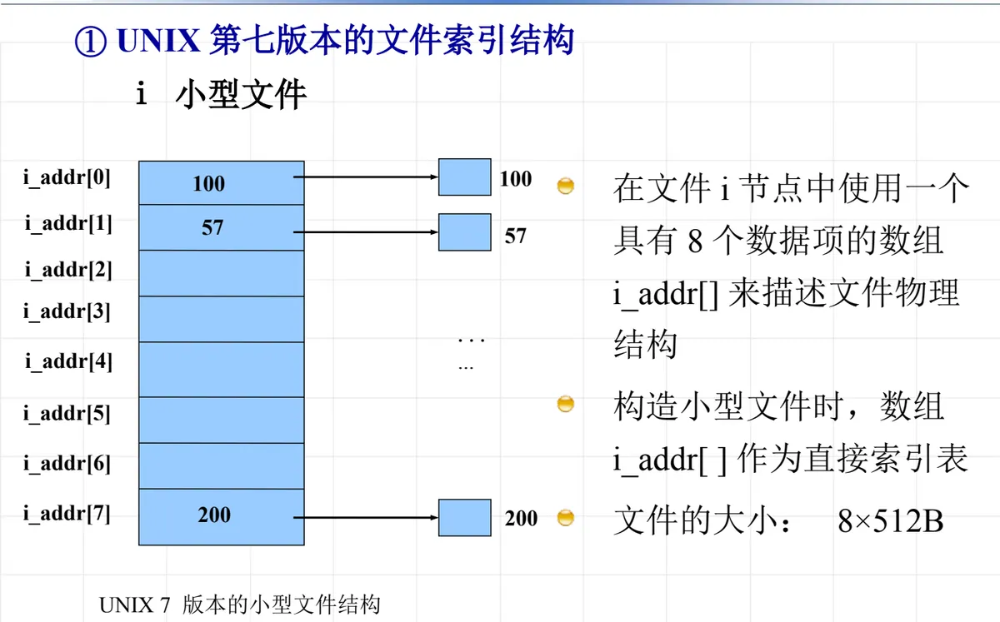
（2）大型文件
文件超过 4 KB 后，直接索引不够用了，就把 i_addr[] 中的表项改作一级间接索引：表项登记的不是数据块号，而是一个索引块的块号，索引块里的表项才登记数据块号。一个物理块 512 B、一个索引项占 2 B，于是一个索引块可容纳 256 个索引项。第七版本的大型文件只使用 i_addr[0]–i_addr[6] 这 7 个表项作一级间接索引，因此最大文件长度为：
7 × 256 × 512 B = 917 504 B ≈ 896 KB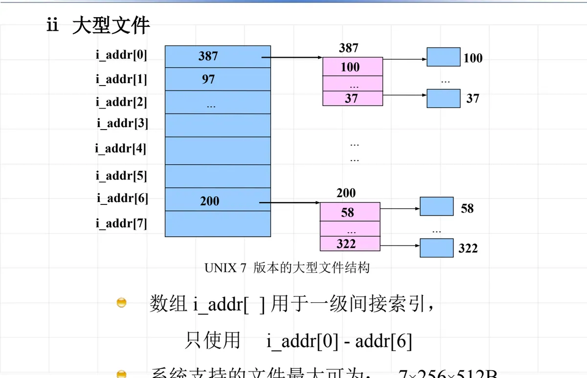
（3）巨型文件
再往上，第七版本把 i_addr[0]–i_addr[6] 继续用于一级间接索引，而把最后一个表项 i_addr[7] 用于二级间接索引：它指向的索引块中，每个表项再指向一个一级索引块。于是可支持的文件长度上限变为：
(7 × 256 + 256²) × 512 B = 34 471 936 B ≈ 33 MB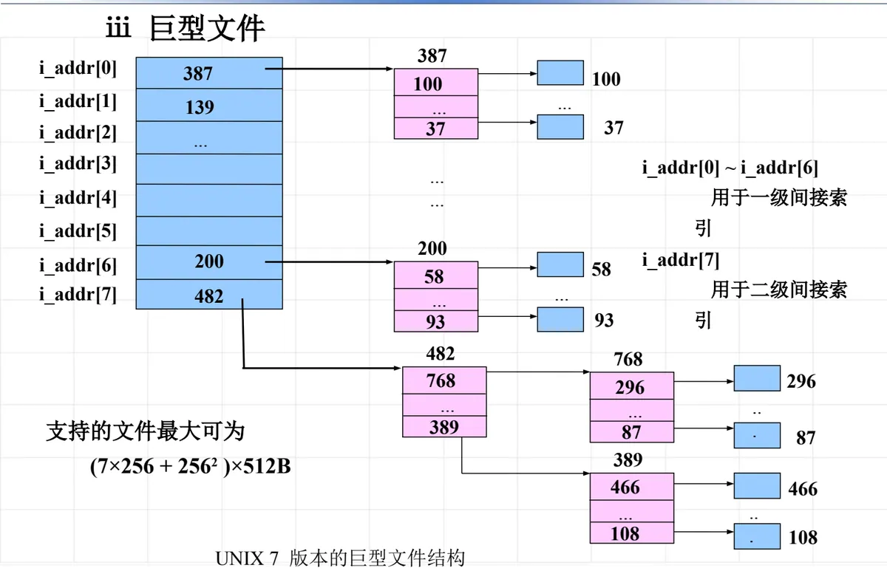
（4）UNIX System V 的文件索引结构
UNIX System V 把地址表扩大为 i_addr[13]，索引层次也增加到三级：其中 10 个表项作直接索引，另各有一个表项分别用于一级、二级和三级间接索引。系统支持的文件最大长度为：
(10 + 256 + 256² + 256³) × 512 B = 8 623 625 216 B ≈ 8 GB可以看到，同样的物理块大小下，索引层次每加一级，能覆盖的文件长度就扩大 256 倍；代价是访问文件末尾的数据时，要多读若干次索引块。
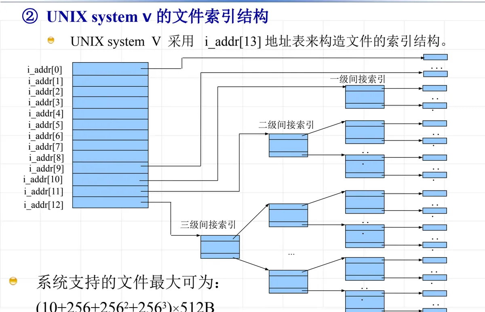
4. 目录项与树型目录结构
UNIX 中每个目录表就是一个目录文件，目录文件由目录项组成。以 UNIX 老版本为例，一个目录项包含 16 个字节：第 1、2 字节是相应文件的辅存 i 节点号，后 14 个字节是文件名；一个辅存磁盘块（512 B）可以容纳 32 个目录项。目录项因此非常紧凑，而文件的其他信息都在 i 节点里。
把目录项串成层次，就得到 UNIX 的树型目录结构，它的查找过程是：
- 每个文件系统都有一个根目录文件，它的辅存 i 节点是存储设备上索引节点区中的第一个；
- 打开某个文件时，从根目录的 i 节点可以找到根目录文件的索引结构，从而得到根目录文件中的目录项；
- 把待打开文件的路径信息与目录文件中的目录项逐一比较，得到下级目录的 i 节点号，逐级向下，最终得到目标文件的 i 节点号；再由 i 节点中的索引表得到数据文件的存储块号，实现对目标文件的随机存取。
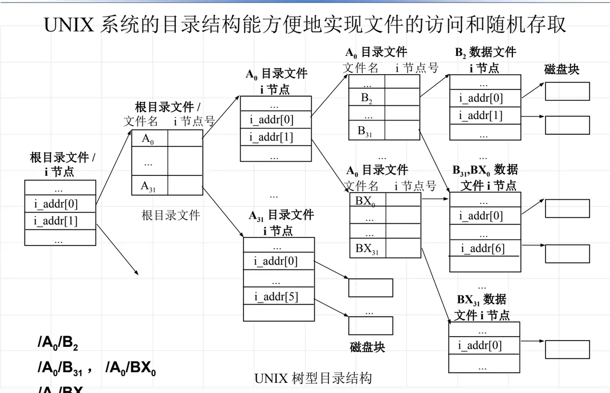
5. 目录结构中的勾链（硬链接）
UNIX 文件目录结构中带有交叉勾链：用户可以用不同的文件路径名访问同一个文件。勾链在用户看来就是为一个已存在的文件另起一个路径名，其结果表现为一个文件由多个目录项所指。与此对应，i 节点中的联接计数 i_ilink（i_nlink）就记录着当前有多少个名字指向它。UNIX 只允许对非目录文件实行勾链——原因在上一节讲过：目录勾链会形成环，使树型结构不再是树。
课件的例子是「一个文件有两个名字」：目录文件 /a/b 中有一个目录项 file1，目录文件 /c/d 中有一个目录项 file2，两者登记的是同一个 i 节点号，于是它们同时指向一个数据文件 i 节点，该 i 节点的 i_nlink 为 2。
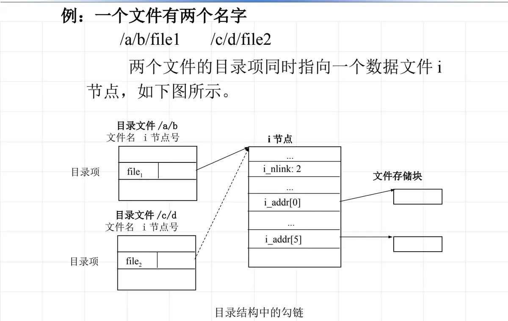
6. UNIX 的打开文件机构
文件目录结构、文件索引节点和索引表都存在辅存上。如果每次读写都从辅存取这些信息，效率太低；但若文件一被访问就长期占用主存，主存又不够用。为此系统设置了打开文件与关闭文件操作：打开一个文件时建立用户与该文件的联系，也就是把辅存中的相关目录项、辅存索引节点和索引表拷贝到主存中；管理这一工作的机构称为打开文件机构，它由活动 i 节点表、系统打开文件表和用户文件描述符表三部分组成。
（1）活动 i 节点表
执行打开文件操作时，把文件辅存 i 节点的有关信息拷贝到主存，形成活动 i 节点表（也称主存索引节点表）。这样，同一文件被多次打开时，辅存 i 节点只需读入一次，主存中的这份活动 i 节点还能记录「当前被打开几次」之类的动态信息。
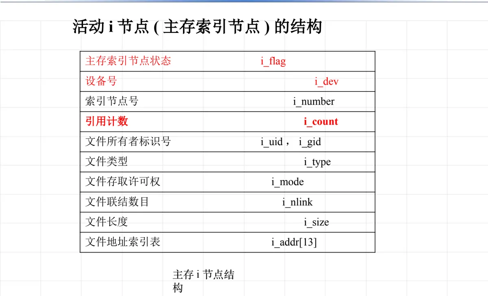
（2）系统打开文件表
一个文件可以被同一进程或不同进程、用同一或不同路径名、以相同或互异的操作要求（读、写）同时打开。为了记录打开文件所需的附加信息，文件系统设置了一个全局核心结构——系统打开文件表。它的表项记录本次打开的操作标志（如只读、只写、读写）、引用计数以及读写位置等随「打开」而不同的信息。
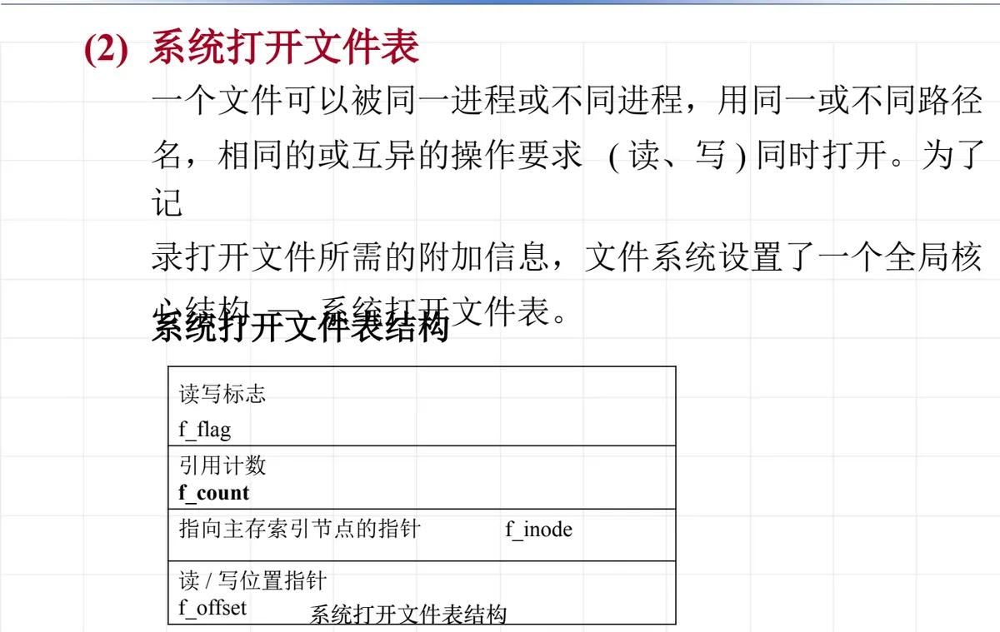
（3）用户文件描述符表
进程需要一个自己的小表来索引上述全局结构：进程控制块中的一个数组 u_ofile[NOFILE] 称为用户文件描述符表，其中每一项（指针）指向系统打开文件表的一个表项。一个打开文件在用户文件描述符表中所占的位置，就是它的文件描述符（或称打开文件号）。进程可以打开不同的文件，也可以对同一文件以不同的操作方式打开。
（4）实例：三次 open 之后的数据结构
假定一个进程执行下列代码：
fd1 = open("/etc/passwd", O_RDONLY);
fd2 = open("local", O_WRONLY);
fd3 = open("/etc/passwd", O_RDWR);结果可以在三张表之间读出来：用户文件描述符表中被占用的是 fd1、fd2、fd3 三项，分别指向系统打开文件表中的三个表项，它们的操作标志依次是「读」「写」「读-写」；由于 fd1 与 fd3 打开的是同一个文件 /etc/passwd，这两个表项最终指向同一个主存索引节点（该节点的引用计数 i_count 为 2），而 fd2 打开的文件 local 对应另一个主存索引节点（i_count 为 1）。可见「同一文件被打开两次」并不需要两份 i 节点，但需要两份打开信息——因为两次打开的操作方式和读写位置可以不同。
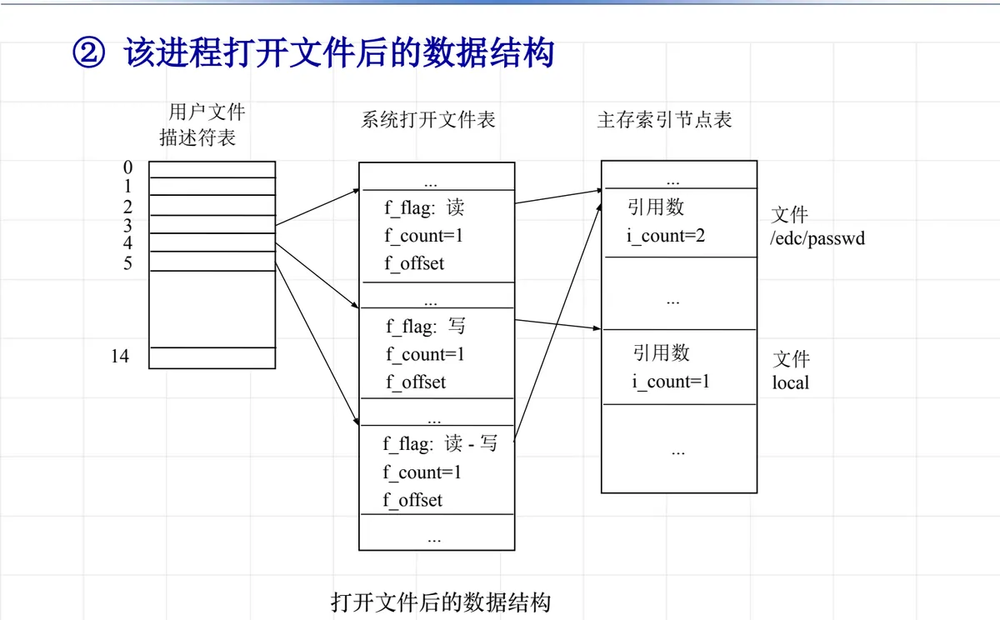
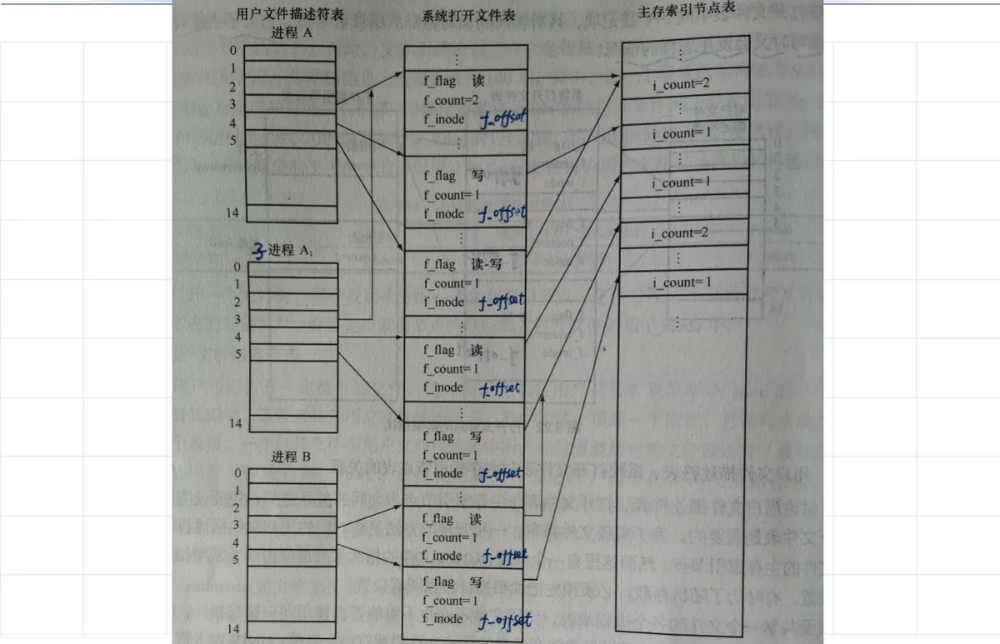
7. 文件卷与空闲磁盘块的管理
文件放在什么样的存储单位上？UNIX 用文件卷来组织：文件卷是指可以有组织地存放信息、常常可以装卸的存储介质（比如一块硬盘），UNIX 文件系统就存放在文件卷上。一个文件卷的磁盘存储区按用途分成四个部分：
| 区域 | 作用 |
|---|---|
| ① 引导块 | 第一个磁盘块（MBR），包含引导程序和分区表 |
| ② 管理块 | 文件系统的管理块，又叫超级块（superblock） |
| ③ 索引节点区 | 由索引节点结构组成 |
| ④ 数据区 | 数据文件占用的区域 |
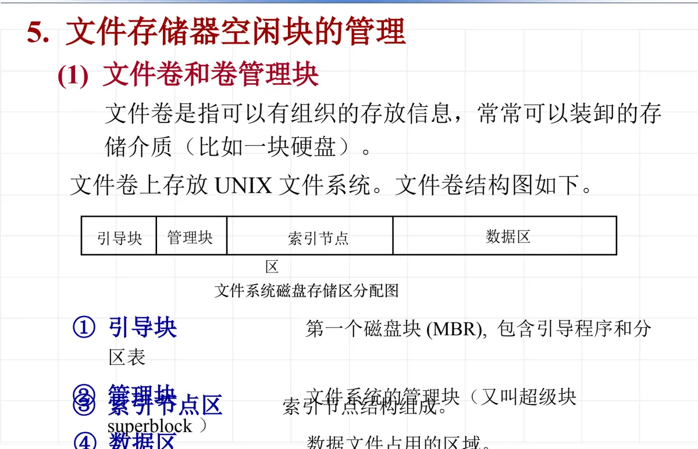
其中管理块记录文件系统的各种数据，如文件系统大小、空闲块数目等。它的结构在 UNIX 中用一个结构体描述：
struct filsys
{
int s_isize; /* i 节点区总块数 */
int s_fsize; /* 文件卷总块数 */
int s_nfree; /* 直接管理的空闲块数 */
int s_free[100]; /* 空闲块号栈 */
int s_ninode; /* 直接管理的空闲 i 节点数 */
int s_inode[100]; /* 空闲 i 节点号栈 */
char s_flock; /* 空闲块操作封锁标记 */
char s_ilock; /* 空闲 i 节点分配封锁标记 */
char s_fmod; /* 文件卷修改标记 */
char s_ronly; /* 文件卷只读标记 */
int s_time; /* 文件卷最近修改时间 */
}空闲磁盘块的管理则采用成组链接法，把空闲表与空闲链两种方法结合起来。系统初启时，文件存储区全是空闲的；组织办法是：把空闲块从尾向前每 100 块分为一组，每一组的最后一块作为索引表，用来登记下一组 100 块的物理块号和块数——这样每组 100 块中真正可供分配的是 99 块。最靠前的那一组可能不足 100 块，这一组的物理块号和块数直接存放在管理块的 s_free[100] 和 s_nfree 中，分配空闲块时就从管理块里的这张栈开始取。
课件给的例子是：初始空闲块共 376 个，从后向前按 100 块一组划分，组与组之间用组末的索引块串起来；最前面（紧邻管理块）的那一组是 77 块，它的块号与块数就记在管理块的 s_free[100] 与 s_nfree 中。
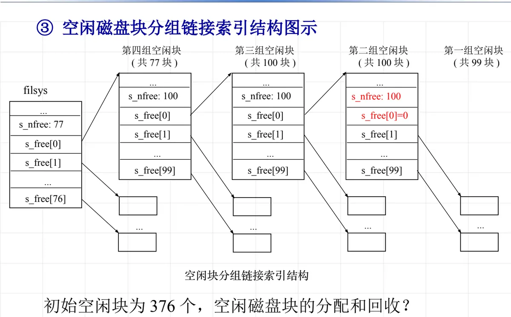
成组链接法同时继承了两方面的好处：既像空闲链那样不需要为每个空闲块单独占用管理空间，又像空闲表那样一次就能取出一批块号，因而在大容量磁盘上仍有很好的分配效率——这也呼应了第 9.4 节讲过的空闲文件目录与空闲块链两种基本方法。
本节小结
- UNIX 实现文件系统的四个着眼点是文件属性与结构、空闲块管理、目录结构、文件操作；其特点是字符流式文件加索引结构、树型目录、文件系统可装卸、设备与目录统一按文件对待。
- 索引结点把目录项中除名字以外的信息集中到一个磁盘块中，目录项只留文件名与 i 节点号；i 节点中有所有者标识、文件类型、存取许可权、联接计数、存取时间、文件长度与地址索引表 i_addr[]。
- 地址索引表的用法决定了文件规模：第七版本 小型文件用 8 个直接索引项（8 × 512 B）、大型文件用 7 个一级间接索引项（7 × 256 × 512 B）、巨型文件再增加 i_addr[7] 作二级间接索引（(7 × 256 + 256²) × 512 B）；System V 用 i_addr[13]，含 10 个直接索引项和一级、二级、三级间接索引，文件上限约 8 GB。
- 目录项 16 字节（2 字节 i 节点号 + 14 字节文件名），一个 512 B 块放 32 项；打开文件时从根目录文件的 i 节点出发，逐级比较路径名得到各层目录的 i 节点号，最终由目标文件的 i 节点取得数据块号，实现随机存取。
- 勾链（硬链接）让多个目录项指向同一个 i 节点，用 i_nlink 计数管理，UNIX 只允许对非目录文件勾链。
- 打开文件机构由活动 i 节点表、系统打开文件表、用户文件描述符表三张表组成，分别承担「文件的共享信息」「一次打开的操作信息」「进程的文件描述符」三种职责；同一文件被多次打开时共享一份活动 i 节点，却各有各的打开表项。
- 文件卷由引导块、管理块（超级块 filsys）、索引节点区、数据区组成；空闲磁盘块用成组链接法管理——每 100 块一组、组末一块作索引表指向下一组，最前面一组的信息放在管理块的 s_free[100] 与 s_nfree 中。